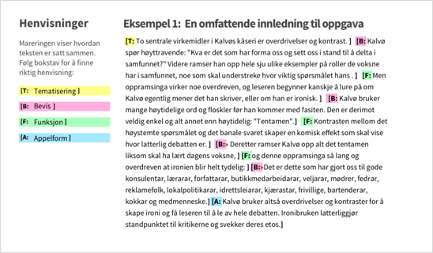
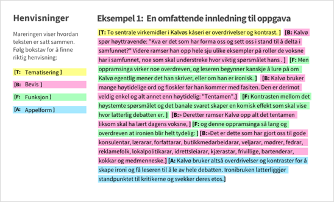
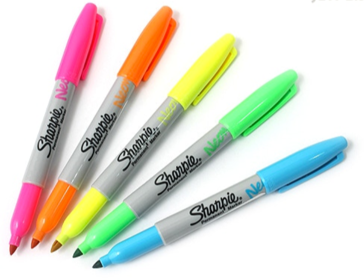

Henvisning i tekst
Når det er behov for å henvise til deler av en tekst, kan det benyttes to virkemidler; nummerering/bokstavmerking alene eller nummerering/bokstavmerking i kombinasjon med fargemarkering.
Retningslinjer:
Krav til universel utforming:
1.4.1 Bruk av farge: Farge blir ikke benyttet som det eneste visuelle virkemiddelet for å formidle informasjon, angi en handling, be om respons eller skille ut et visuelt element. (Nivå A)
Nummerering/bokstavmerking kan stå i bold med klammer i forkant av avsnittet eller teksten den henviser til:
[b: Teksten det refereres til]
[1: Teksten det refereres til]
Fargemarkering kan ikke benyttes alene ettersom dette ikke lar seg lese og fortolke av fargeblinde. Derfor må fargekoding alltid gjøres i kombinasjon med nummerering/bokstavmerking. Bokstavmerking kan følge logikk (B = bevis, F=funksjon), eller den kan følge alfabetisk rekkefølge.
Fargene som kan benyttes:
| #FFFF91 (gul) | T |
| #FEB1DD (rosa) | T |
| #AEFFC0 (grønn) | T |
| #A6E9FE (blå) | T |
| #FEBC84 (oransje) | T |
| #E7CFFF (lilla) | T |
Eksempler på bruk:
Eksempel på bruk (markering i starten):
Eksempel på bruk (markering hele):
Bakgrunn for valg av farger:
Highlighters i neon-farger er tradisjonelt benyttet for å markere tekst. Markering av tekst i H5P vil benytte seg av denne konvensjonen. Disse fargene er tilstrekkelig ulik hverandre til at en ikke blander dem (for vanlig seende), og de fungerer mot sort tekst slik at kontrasten oppnår AAA-krav. Det er et bevisst valg at en ikke benytter farger fra NDLAs profil. Profilfargene skal understøtte navigasjon og områder i løsningen og må ikke utvannes og brukes til denne type markering.
